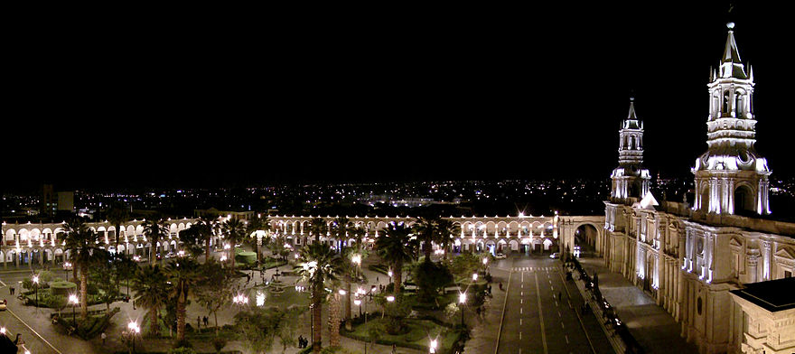

Guia turistica virtual AREQUIPA |
|
 |

Guia turistica virtual AREQUIPA |
|
|

SIC: 03:00 hrs
PRIVADO: 06:00 hrs
Dificultad: Intermedia. (90 % de los pasajeros pueden terminar el trek por sus propios medios)
Distancia total: 22.5 Km.
Desnivel acumulado en la caminata: 3150 M.
Clima: Subtropical (mucho sol en el día y frio por la noche, ambiente seco) hasta Cabanaconde. Semi-tropical dentro del cañón, (26 a 28 °C de día, mucho sol y de diciembre a marzo lluvia generalmente por las tardes; noches templadas).
PRIMER DIA:
Recojo del hotel, Tomamos nuestro transporte turístico directo a Cruz del cóndor, donde nos quedaremos por 1 hora para ver el vuelo de los cóndores, a continuación nos dirigimos al pueblo de Cabanaconde para Almorzar.
Después del Almuerzo iniciaremos nuestra caminata via Pampa De San Miguel por 3:30 horas de caminata (Bajada) llegaremos a San Juan de Cchucho, Cena y Pernocte en Cabañas Rusticas.
SEGUNDO DIA:
07:00 hrs Después del Desayuno continuaremos nuestra caminata a lo largo del cañón, pasando y visitando los pueblos de Coshñirgua y Malata. Luego nos trasladamos hacia el punto más bajo de nuestro recorrido "Sangalle". Al llegar aquí alrededor de las 12:00 hrs, tendremos la oportunidad de relajarnos en la piscina con aguas temperadas. Almuerzo, Cena y Pernocte en cabañas rusticas.
TERCER DIA:
04:00 hrs Snack. Luego iniciamos nuestra caminata por 03 hrs de subida hacia el pueblo de Cabanaconde. 09:00 Después de tomar el desayuno saldremos con dirección al Mirador de la Cruz del Cóndor, donde se podrá observar el majestuoso vuelo de los cóndores y la profundidad del cañón. Luego retornaremos a Chivay visitando los pueblos de PINCHOLLO, MACA, ACHOMA y YANQUE, en los cuales observaremos danzas típicas de la zona así como las Lito maquetas, iglesias coloniales y andenerías. 13:00 aprox. Arribo a Chivay. Almuerzo (Opcional) 14:30 aprox. Abordaremos el bus para retornar a Arequipa, llegando alrededor de las 18:00 hrs, dejándolos en sus respectivos hoteles.
El Trek Incluye:
- Transporte turístico
- Guía profesional
Alojamiento en Sangalle (Paraíso La Palmeras Lodge)
Alojamiento en casa de las familias de San Juan de Chuccho
Todas las comidas durante el viaje (03 desayunos, 02 almuerzos, 02 cenas)